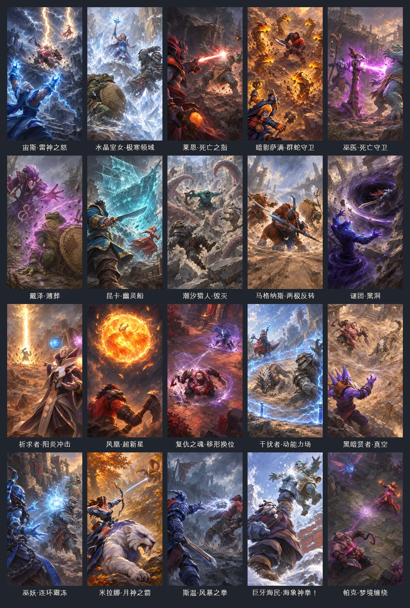

宙斯·雷神之怒

生成描述
为yf-artifact画Dota 2英雄宙斯施放「雷神之怒」的全新技能场景。宙斯位于左下前景台阶，保留官方白须、发型、蓝白服饰与电光气质，张臂向上引雷。中景帕吉与远景莉娜分别处于两条岔路，头顶各有一根清楚的金白落雷同时击下，衣摆、铁链和石屑被电力掀起。把三位英雄放在三个不同尺度的位置，最亮的两处落雷点在中间和右上，云层只留两道有力量的主雷痕。
已完成 20 张，Migoo Flare，768×1360。按官方技能名选题，英雄使用官方造型参考，其他出场角色使用英雄或已有单位图。每张另配两幅Classic无框原画，点图可打开原图。

为yf-artifact画Dota 2英雄宙斯施放「雷神之怒」的全新技能场景。宙斯位于左下前景台阶，保留官方白须、发型、蓝白服饰与电光气质，张臂向上引雷。中景帕吉与远景莉娜分别处于两条岔路，头顶各有一根清楚的金白落雷同时击下，衣摆、铁链和石屑被电力掀起。把三位英雄放在三个不同尺度的位置，最亮的两处落雷点在中间和右上，云层只留两道有力量的主雷痕。
为yf-artifact画Dota 2英雄水晶室女施放「极寒领域」的全新技能场景。水晶室女站在冻岩后方，保留官方金发、蓝白衣装、毛领和法杖，举杖持续施法。她周围几处冰晶正在由近及远错开炸起，近景蛙兵压盾缩身，侧面獠牙门卫抬臂后退。冰爆有大有小，较近两簇形成前景白色尖面，人物在冰隙间可辨，场景以浅赭山岩衬出冷冰场。
为yf-artifact画Dota 2英雄莱恩施放「死亡之指」的全新技能场景。莱恩在左前景抬起恶魔化的手指，保留官方角形面孔、异化巨手、法杖与紫红衣装，一道粗短红白魔力从指尖直贯右中景蓝皮营地守卫的胸前甲布。目标上身后仰、双手张开，铜铃被甩到一旁，冲击点用一小团白亮与裂开的地尘表现。人物皮肤与身体完整，焦点是指尖、贯穿空间的单根魔力束和受力姿态。
镜头高位斜俯，蛇形守卫围出不规则包围圈
用光午后暖日光，蛇卫口缘有少量法力亮点
主色暗影萨满金褐紫、蛇卫旧金与黑、斧王赤红
为yf-artifact画Dota 2英雄暗影萨满施放「群蛇守卫」的全新技能场景。暗影萨满位于左下半身，保留官图面貌、头饰、衣装与双持器具，正把群蛇守卫召到石地。中央斧王站在由六只蛇形图腾守卫围出的空间中，红皮大斧明显。蛇卫为插地的金褐盘蛇柱，张开的蛇口朝向中央，其中两只刚从碎土中升起。强调召唤完成与包围关系，蛇卫大小随透视递减，萨满与斧王之间留清楚视线。
为yf-artifact画Dota 2英雄巫医施放「死亡守卫」的全新技能场景。巫医在左后方半身持续施法，保留官方紫色皮肤、骨饰、面貌和长杖。近景中央插着一根带面具兽首的木制死亡守卫，图腾口射出一段紧凑粉紫攻击，打向右侧急退的蓝皮营地守卫，目标缩肩护胸。镜头放低，图腾与攻击线是主角，巫医手势和目标的失衡反应在两端，背景为淡暖灰旧院。
为yf-artifact画Dota 2英雄戴泽施放「薄葬」的全新技能场景。戴泽在左侧近景伸出一只手，保留官方粉紫皮肤、骨饰、头部与法杖识别。前景蛙族护篓兵单膝撑地，藤盾倾在身侧，神情疲惫却仍睁眼。几段很薄的紫红护命光沿蛙兵肩背和手腕立起，飞来的小碎石在皮肤前停住一瞬。画面聚焦戴泽伸手、蛙兵还在使力的指蹼与贴身祝福，表现濒危中的保护。
镜头低位从船艏下望入战场，昆卡在前景侧身挥剑
用光阴天海港天光，幽船船肋透出冷亮
主色幽灵青、昆卡蓝金、莉娜红衣、浅褐港岸
为yf-artifact画Dota 2英雄昆卡施放「幽灵船」的全新技能场景。昆卡位于左前景，保留官方海军面貌、蓝金衣装与长剑，侧身挥剑指向右前方。巨大的半透明幽灵船从他后方斜冲过画面，船艏与破帆形成最强轮廓，船腹下卷起带木屑的幽蓝浪。右中景莉娜急转身后撤，红发和裙摆向船的冲击方向飘起。让幽船、剑指方向与目标位置在同一条斜线上，港岸用暖灰褐色衬出青色船体。
为yf-artifact画Dota 2英雄潮汐猎人施放「毁灭」的全新技能场景。潮汐猎人位于石场中央，保留官方巨大的海怪头形、绿皮、锚与沉重躯干，双臂向外张开。周围地面被毁灭技能顶开，数根粗海兽触须从不规则裂缝中向外扬起。前景獠牙门卫和侧面白鬃巡兽被冲击抬离地面，脚下有明确空隙。触须从中央向四周伸展，角色只占较小面积，用尺度和离地姿态交代范围冲击。
为yf-artifact画Dota 2英雄马格纳斯施放「两极反转」的全新技能场景。马格纳斯在中央低头发力，保留官方角形、宽厚四足身躯、蓝色甲片与长柄武器。主宰从左侧、蛙族藤盾兵从右后方同时被拉向他，二者脚跟在浅砂地上拖出汇向中心的轨迹，衣物和武器也向内倾。中央一圈很薄的空气扭曲压低尘土，力量由姿态与拖痕表达，镜头贴地看清马格纳斯沉稳的四足和周围失衡的目标。
为yf-artifact画Dota 2英雄谜团施放「黑洞」的全新技能场景。谜团在左下角伸手施法，保留官方无实体的紫黑身躯、发光眼与下方涡旋形态。画面中央偏右出现一个吞光的扭曲漩涡，附近碎石、灰尘和斯温的披布都被拉向核心；斯温保留蓝色全盔、红布和巨剑，一腿拖地、一臂试图撑住斜石。漩涡中心近黑，边缘只留一段弯曲细光，靠近核心的石柱线条被拉弯，人物与受力方向清楚。
镜头远近层次强烈，祈求者在前景，目标与落日柱在远处
用光干燥白昼自然光，落点爆出集中金白光
主色祈求者白金与紫、白金日炎、赤褐岩地、蓝皮目标
为yf-artifact画Dota 2英雄祈求者施放「阳炎冲击」的全新技能场景。祈求者位于右前景半身，保留官方浅发、高领白金紫色衣装与三色法球，一只手指向远处石地。远处蓝皮营地守卫脚下刚亮起一个很浅的灼热点，随即从正上方落下一束直而短的白金日炎，目标抬臂躲避，地面石砂向外翻。焦点在远处的精准落点与祈求者指向它的手势，炎柱只覆盖目标周围小区域，赤褐环境与白金技能光形成对比。
镜头低角度仰看燃烧恒星，斧王在下方举斧靠近
用光恒星为主要光源，周围人物受暖反光
主色金橙恒星、凤凰红金焰、斧王赤红、深灰暮空
为yf-artifact画Dota 2英雄凤凰施放「超新星」的全新技能场景。凤凰正化为一颗悬在低空的燃烧恒星，中心是明亮金橙球体，球壳里隐约可见原版凤凰的鸟形与红金羽焰，两片逐渐收拢的火翼融入球面。下方斧王举着大斧靠近，红皮、黑发与肩甲受恒星照亮，身体后仰抵抗热浪。低角度把恒星放在中上部，凤凰身份通过焰翼与内部鸟形表达，球周几片火羽和上升灰烬最精细，深灰暮空保持大块空间。
镜头高位斜看两端位置，互换的两位英雄与两道残影交错
用光傍晚侧光，换位边缘只有少量紫白亮痕
主色复仇之魂蓝紫羽翼、帕吉灰白皮、暖红石地
为yf-artifact画Dota 2英雄复仇之魂施放「移形换位」的全新技能场景。复仇之魂与帕吉在同一处暖红石院两端发动移形换位，复仇之魂保持官方蓝紫非人面貌、羽翼与衣装，帕吉保持灰白肥厚身躯、围裙和肉钩。画面定格在两人刚交换完成的瞬间，复仇之魂站在原本靠近门口的敌方位置，帕吉被换到院中，两端各留下一个很薄的反向残影，紫白短痕交叉指向对面。高位斜视清楚分开两个站位、地面投影和残影，重点是人物落地后的受力反应。
出场干扰者（施法者） · 獠牙门卫（目标或配角） · 暮坡嗅迹兽（目标或配角）
镜头外侧低机位看闭合场边，干扰者在边缘施法
用光晴天自然光，栅栏细亮，地面投影清楚
主色干扰者蓝发红衣与坐骑、淡蓝电栅、浅赭石地
为yf-artifact画Dota 2英雄干扰者施放「动能力场」的全新技能场景。干扰者位于左后方，保留官方蓝发、红色衣装、器具与爬行动物坐骑，举手引导一圈正在闭合的动能力场。场内灰蓝獠牙门卫前掌抵住边缘试图出去，白鬃巡兽压低身子急停；场边数根短而细的蓝白电栅沿地面环起，电栅之间有空气扭曲。相机从场外低处向内看，近景有一段清楚圆弧，干扰者、目标与边界位置明确，浅赭石场衬出小面积电光。
为yf-artifact画Dota 2英雄黑暗贤者施放「真空」的全新技能场景。黑暗贤者位于画面左下，保留官方巨大的紫色头形、白须与衣装，一只手向掌心收拢。中间砂地上一小片空气被真空技能压缩，帕吉和白鬃巡兽分别从两侧被拉向中心，衣摆、铁链、尾巴和尘土都朝同一点倾。用收束的地面拖痕、卷入中心的枯叶和身体姿态交代吸力，中心保留地面纹理与一个透明空气凹陷。高位斜俯让两组受力轨迹一眼可读，背景为亮砂褐色旧院。
为yf-artifact画Dota 2英雄巫妖施放「连环霜冻」的全新技能场景。巫妖位于左前方半身，保留官方冰蓝骨面、头部饰件、袍摆与手部造型，刚把连环霜冻送出。近处灰蓝獠牙门卫被一颗大而清楚的冷白霜球撞得缩肩，球的回弹轨迹正指向后方蓝皮营地守卫；后者抬铜铃护脸，脚步踉跄。只保留一颗最明确的实体霜球，先前运动用稀疏冰晶和细冷痕交代，暗赭旧墙与暖灰地面托出冷色作用点。
镜头低位穿过林间空隙，长箭从米拉娜射向沙王
用光午后林隙斜光，箭尖与弓弦局部清亮
主色米拉娜蓝金与白虎、沙王金褐、秋叶橙黄
为yf-artifact画Dota 2英雄米拉娜施放「月神之箭」的全新技能场景。米拉娜骑在原版白色大型坐骑上，位于左下前景侧身拉弓放箭，保持官方面貌、发饰、蓝金装束与坐骑外形。一支月神之箭沿林间空隙直射右后方刚探出头的沙王，沙王蝎形头、金褐甲壳和钳尾可辨，正侧身躲避。箭的尖端冷白、尾迹细而有方向，弓弦回弹、米拉娜放箭手与远处目标连在一条斜线上，秋叶橙黄背景衬出白虎和蓝金英雄。
镜头侧面中近景，飞出的魔力手套占画面中央
用光阴天自然光，魔力手套边缘一小段最亮
主色斯温蓝甲红布、斧王红皮、银白雷光、冷灰石地
为yf-artifact画Dota 2英雄斯温施放「风暴之拳」的全新技能场景。斯温位于左侧前景，保留官方全盔蓝甲、红布与巨大剑，一只戴甲手刚向前掷出一团凝成拳套形的魔力。中央的银白魔力手套带很短电痕，正击中右侧斧王肩前，斧王头向后偏、斧柄失去原角度，脚下散开一个小尘圈。镜头侧看手套飞行与命中，斯温的投掷手势、中央拳形魔力和斧王失衡姿态都清楚，画面以冷灰石场和两位英雄的蓝红形体组织。
镜头近地仰视，上勾拳从下向上把目标抬起
用光明亮雪地反光，拳面与獠牙局部受光
主色巨牙白毛蓝皮护具、青蓝目标、雪白与砖红
为yf-artifact画Dota 2英雄巨牙海民施放「海象神拳！」的全新技能场景。巨牙海民位于左下近景，保留官方海象面貌、长牙、白毛、帽具与厚实衣装，身体压低后猛向上挥出海象神拳。右上方蓝皮营地守卫被拳势顶离地面，双腿蜷起、铜铃向后飞，脸部惊讶，身体完整。拳与目标下颌前的作用点只用一小团白色冲击与碎雪表现，镜头低仰看清上下力量方向，背景用一面砖红矮墙与大块雪白地拉开体形。
出场帕克（施法者） · 莉娜（目标或配角） · 帕吉（目标或配角）
镜头高位斜俯，梦境锚点居中，两名英雄在两端牵动光索
用光暮色柔光，锚点小范围珠白，梦索细亮
主色帕克蓝粉翼、莉娜红与帕吉灰白、紫红梦索、灰绿地
为yf-artifact画Dota 2英雄帕克施放「梦境缠绕」的全新技能场景。帕克位于画面左上方低飞，保留官方蓝色小型仙女龙身体、粉色大翼、面貌和长尾。地面中央出现一枚小而清楚的梦境锚点，紫红细索分别连向右侧莉娜和左下帕吉，两位英雄保持原版外貌与装备，正向相反方向退开而被梦索牵住，手臂和腰身表现拉力。高位斜俯看清中央锚点、两条光索与两个站位，地面是灰绿石板，只有锚点附近一小团珠白亮色，光索以松动细笔画出弹性。